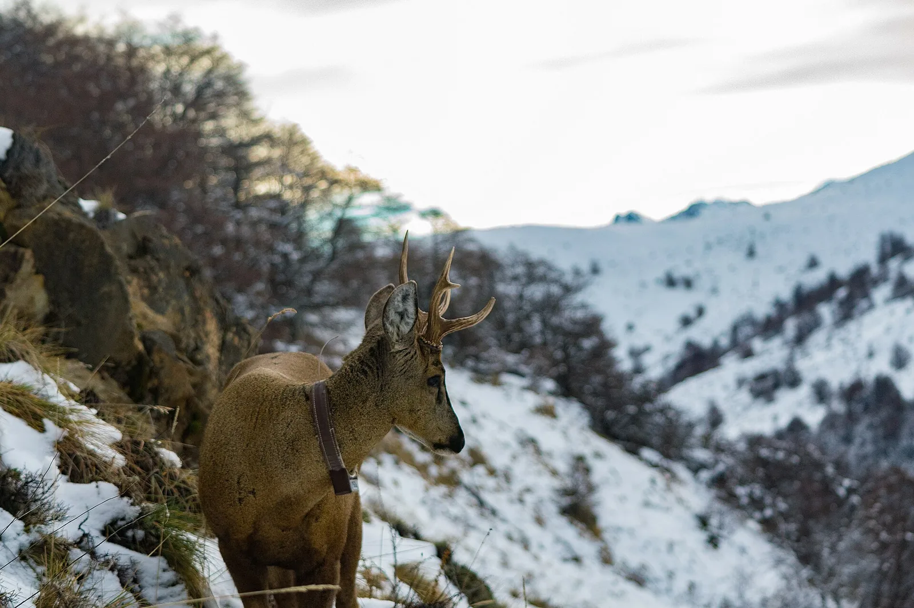

S16 · Sur
S16 · Süden
S16 · South
Bosques andino-patagónicos
Información
Information
Information
Vi bosques centenarios convertidos en cenizas por manos que después vinieron a comprar la tierra ennegrecida. Entre las cenizas vi sufrir al improbable huemul, un ciervo que ya casi se ha ido.
Ich sah jahrhundertealte Wälder zu Asche werden, durch Hände, die danach kamen, um die geschwärzte Erde zu kaufen. Zwischen der Asche sah ich den unwahrscheinlichen Huemul leiden, einen Hirsch, der fast schon fort ist.
I saw centuries-old forests turned to ashes by hands that came afterwards to buy the blackened land. Among the ashes I saw the improbable huemul suffering, a deer already almost gone.
El huemul es un ciervo de los bosques patagónicos de Argentina y Chile, y está clasificado en peligro de extinción. Se estima un mínimo de 780 ejemplares entre los dos países, y menos de 1.500 en total. En Argentina fue declarado Monumento Natural por la Ley 24.702 de 1996.
El huemul es un ciervo de los bosques patagónicos de Argentina y Chile, y está clasificado en peligro de extinción. Se estima un mínimo de 780 ejemplares entre los dos países, y menos de 1.500 en total. En Argentina fue declarado Monumento Natural por la Ley 24.702 de 1996.
El huemul es un ciervo de los bosques patagónicos de Argentina y Chile, y está clasificado en peligro de extinción. Se estima un mínimo de 780 ejemplares entre los dos países, y menos de 1.500 en total. En Argentina fue declarado Monumento Natural por la Ley 24.702 de 1996.
Galería
Galerie
Gallery


Fuentes
Quellen
Sources
- Administración de Parques Nacionales, Argentina, Huemul, emblema de los bosques patagónicos — https://www.argentina.gob.ar/jefatura/ambiente/fauna/huemul-emblema-de-los-bosques-patagonicos consultado 2026-10-05abgerufen 2026-10-05accessed 2026-10-05
- Sistema de Información de Biodiversidad, Argentina, Hippocamelus bisulcus (huemul) — https://sib.gob.ar/especies/hippocamelus-bisulcus consultado 2026-10-05abgerufen 2026-10-05accessed 2026-10-05